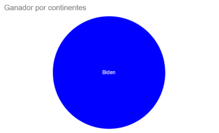
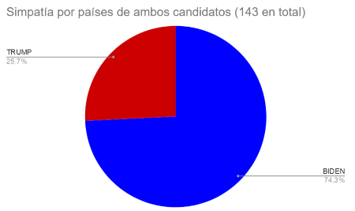
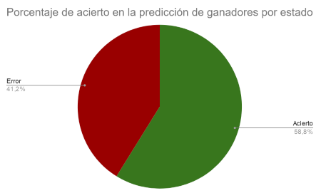

Solución a esta necesidad.
Para llevar a cabo nuestro proyecto, hemos empleado TextBlob, un módulo de análisis de lenguaje natural, con el objetivo de conocer si en cada tweet se expresa una opinión positiva o negativa. Este concepto se denomina polaridad, y puede tomar un valor entre 0 y 2: cuanto más alto, más positivas son las opiniones. De esta forma, hemos estudiado qué candidato tiene una media de polaridad mayor que el otro en cada territorio.
En concreto, hemos analizado la polaridad por continente, por países y en cada estado de Estados Unidos. En el último caso, también hemos querido comprobar si el candidato con mayor polaridad en cada estado se corresponde con el que resultó ganador en las elecciones de 2020. De esta manera, podemos comprobar si el análisis sentimental de tweets es realmente una metodología a tener en cuenta o si sus resultados se alejan de la realidad.
Pasando a los resultados, en los seis continentes del mundo (consideramos como separados América del Norte y del Sur) es Joe Biden quien posee una polaridad mayor. En cuanto a los países, Biden obtiene una mayor polaridad en 124 países, frente a Trump que únicamente es superior en 43. Como curiosidad, Biden tiene mayor polaridad en Estados Unidos y en España. Por último, en 30 de los 51 estados de EEUU coincide el candidato con mayor polaridad con el ganador, lo que resulta en una precisión del 58,82%.
  Hay varios factores que deben ser valorados de cara a determinar si este análisis sentimental es válido o no. En primer lugar, hemos considerado que todos los tweets estaban escritos en inglés, y la posibilidad de traducirlos ha tenido que ser descartada debido a que implicaba un alto coste monetario. Esto influye enormemente en aquellos países donde se escriben un alto número de tweets en un idioma distinto, ya que en ellos el análisis no será tan efectivo. Por otro lado, en algunos territorios el número de tweets puede ser muy bajo, con lo que no se obtendría una muestra representativa. Además, a nivel global, la mayoría de usuarios de Twitter suelen estar asociados con una población más joven, por lo que podría no corresponderse con una muestra demográfica totalmente válida. A su vez, es posible que un alto número de tweets no hayan sido escritos por personas reales, sino por bots. Por último, en cuanto al análisis por estados, hay algunos de ellos donde el margen de victoria fue muy estrecho, y algunas polaridades podrían caer dentro del error estándar, por lo que la precisión podría variar.
Sin embargo, teniendo en cuenta estas circunstancias, el haber obtenido una precisión de más del 50% en el análisis por estados nos indica que los resultados no difieren enormemente de las opiniones y los votos efectuados, por lo que finalmente consideramos que el análisis sentimental de tweets puede ser una técnica válida a la hora de estimar el apoyo a un candidato político.
En cuanto al trabajo existente, existen muchos papers relacionados con el análisis sentimental político a partir de tweets, como el realizado por Laura Cram et al. sobre las elecciones de Reino Unido en 2017 o el de Ussama Yaqub et al. acerca de las elecciones de Estados Unidos de 2020 y de Reino Unido en 2017 . En el estudio de Yaqub, en concreto sobre la parte de las elecciones de EEUU, únicamente se analizan los diez estados con más tweets, obteniendo un resultado correcto en ocho de ellos, mientras que la diferencia de polaridad en los otros dos estados se encontraba dentro del error estándar. Por ello, nos reafirmamos en la validez de este tipo de análisis siempre y cuando se tengan en cuenta los factores ya mencionados.